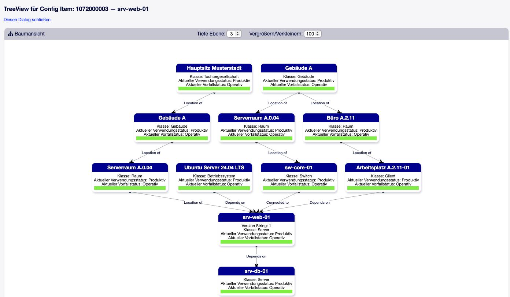

Verknüpfungen und Vorfallstatus-Vererbung¶
Config Items stehen selten allein: Ein Server steht in einem Rack, das Rack in einem Raum; eine Anwendung hängt von einer Datenbank ab; ein Ticket betrifft einen Drucker. Diese Beziehungen bilden die eigentliche Stärke einer CMDB — erst sie beantworten die Frage „Was ist betroffen, wenn das hier ausfällt?“.
Linktypen¶
Die Linktypen liefert das Paket ITSMCore. Jeder Typ hat eine Bezeichnung aus Sicht der Quelle und eine aus Sicht des Ziels:
Typ |
Quelle sagt … |
Ziel sagt … |
|---|---|---|
|
Hängt ab von |
Benötigt für |
|
Beinhaltet |
Teil von |
|
Location of |
Located in |
|
Verbunden mit |
Verbunden mit |
|
Alternativ zu |
Alternativ zu |
|
Relevant für |
Relevant für |
Welche Typen zwischen welchen Objekten erlaubt sind, legen die Einstellungen
LinkObject::PossibleLink###… fest. Ab Werk:
Objekte |
Erlaubte Typen |
|---|---|
Config Item ↔ Config Item |
AlternativeTo, ConnectedTo, DependsOn, Includes, RelevantTo, LocationOf |
Config Item ↔ Ticket |
AlternativeTo, DependsOn, RelevantTo |
Config Item ↔ Service |
AlternativeTo, DependsOn, RelevantTo |
Config Item ↔ FAQ |
Normal, ParentChild, RelevantTo |
Eigene Linktypen werden über LinkObject::Type###… angelegt und über
LinkObject::PossibleLink###… freigegeben.
Zwei Arten von Beziehungen¶
In OTOBO 11 entstehen Beziehungen zwischen Config Items auf zwei Wegen:
Manuelle Verknüpfung |
Referenzfeld |
|
|---|---|---|
Angelegt |
über Verknüpfen in der Detailansicht (oder die Sammelaktion) |
durch Ausfüllen eines Referenzfeldes vom Typ Config Item, z. B. Standort |
Gepflegt |
von Hand, einzeln |
automatisch mit dem Feldwert — Wert ändern, Beziehung ändert sich |
Voraussetzung |
Linktyp ist für das Objektpaar erlaubt |
im Referenzfeld sind Linktyp, Richtung und Referenzart gesetzt |
Für die Vererbung des Vorfallstatus, die Baumansicht und die Abschnitte vom Typ
ConfigItemLinks führt OTOBO beide Arten in einer gemeinsamen Tabelle
zusammen. Referenzfeld-Beziehungen werden dabei nicht zusätzlich als
klassische Verknüpfung angelegt.
Warnung
Ein Referenzfeld auf Config Items ohne Linktyp erzeugt überhaupt keine Beziehung: Das referenzierte Config Item bekommt keinen Rückverweis, taucht in der Baumansicht nicht auf und gibt keinen Vorfallstatus weiter. Für eine Standort- oder Abhängigkeitsstruktur daher im Referenzfeld immer den Linktyp setzen (siehe Dynamische Felder für Config Items).
Die Einstellungen im Referenzfeld:
- Linktyp (
LinkType) Typ der Beziehung. Angeboten werden nur Typen, die
LinkObject::PossibleLinkfür das Objektpaar erlaubt.- Richtung (
LinkDirection) ReferencingIsSource— das Config Item mit dem Feld ist die Quelle (Voreinstellung);ReferencingIsTarget— es ist das Ziel.Beispiel: Ein Raum hat ein Feld Gebäude mit Linktyp
LocationOf. Das Gebäude ist Location of des Raums, also Quelle — das Feld braucht die RichtungReferencingIsTarget. So sind auch die Standortfelder des Ready2Import-Pakets eingestellt.- Referenzart (
LinkReferencingType) Dynamic— die Beziehung gilt für das Config Item (Voreinstellung);Static— sie gilt nur für die Version, in der der Wert gesetzt wurde. Die Vererbung des Vorfallstatus berücksichtigt nurDynamic.
Wo Beziehungen zu sehen sind¶
Verknüpfungstabelle der Detailansicht (manuelle Verknüpfungen zu Config Items, Tickets, Services, FAQ). Ob sie als Tabelle unter dem Inhalt oder kompakt in der Seitenleiste erscheint, bestimmt
LinkObject::ViewMode(ITSM-Voreinstellung: Complex).Abschnitte vom Typ
ConfigItemLinksin der Klassendefinition — gefiltert nach Richtung und Linktyp (siehe Klassendefinition (YAML)).Baumansicht — grafisch, über mehrere Ebenen.
Druckansicht (PDF).
LinkObject::DefaultSubObject###ITSMConfigItemKlasse, die im Dialog Verknüpfen vorausgewählt ist (Voreinstellung
Client).
Baumansicht¶
Die Baumansicht (Menüpunkt Baumansicht in der Detailansicht) zeigt das Config Item mit seinen Beziehungen zu anderen Config Items als Graph — in beide Richtungen und über mehrere Ebenen. Tiefe (1–10) und Zoom lassen sich in der Ansicht verstellen.

Abb. 9 Baumansicht eines Config Items¶
CMDBTreeView::DefaultDepthAnfangstiefe (Voreinstellung 3).
CMDBTreeView::ShowLinkLabelsBeschriftung der Linktypen an den Kanten (Voreinstellung
Yes).
Die Baumansicht zeigt ausschließlich Beziehungen zwischen Config Items; Tickets und Services erscheinen dort nicht.
Vererbung des Vorfallstatus¶
Bekommt ein Config Item den Vorfallstatus Incident, setzt OTOBO die davon betroffenen Config Items automatisch auf Warning. Welche Beziehungen dabei verfolgt werden, steht in:
ITSM::Core::IncidentLinkTypeDirectionZuordnung Linktyp → Richtung. Voreinstellung:
DependsOn: Both LocationOf: Source
SourceVom gestörten Config Item zu den Config Items, für die es Quelle ist.
TargetVom gestörten Config Item zu den Config Items, für die es Ziel ist.
BothIn beide Richtungen.
So läuft die Berechnung:
Ausgehend von einem geänderten Config Item sucht OTOBO über alle konfigurierten Linktypen das zusammenhängende Netz ab und merkt sich, welche Config Items selbst einen Vorfall haben.
Von jedem gestörten Config Item aus folgt es den Beziehungen in der konfigurierten Richtung — auch über mehrere Stufen — und setzt jedes erreichte Config Item auf Warning, sofern es nicht selbst gestört ist.
Alle übrigen Config Items im Netz erhalten wieder ihren eigenen Vorfallstatus.
Beispiel mit der Voreinstellung LocationOf: Source:
Gebäude A ──Location of──▶ Raum 101 ──Location of──▶ Rack 3
Gebäude A: Incident → Raum 101: Warning → Rack 3: Warning
Hat umgekehrt das Rack einen Vorfall, bleiben Raum und Gebäude Operational —
die Richtung Source führt nur vom Gebäude nach unten. Für DependsOn gilt
dagegen Both: Die Warnung geht an alles, was von dem gestörten Config Item
abhängt, und an alles, wovon es abhängt.
Angestoßen wird die Berechnung, wenn sich der Vorfallstatus eines Config Items
ändert, wenn eine Verknüpfung zwischen Config Items angelegt oder gelöscht wird
und wenn sich ein Referenzfeld mit Referenzart Dynamic ändert.
Warnung
Nach einer Änderung von ITSM::Core::IncidentLinkTypeDirection bleiben die
bestehenden Status zunächst, wie sie sind. Neu berechnet wird mit:
bin/otobo.Console.pl Admin::ITSM::IncidentState::Recalculate
Mit --configitem-number <Nummer> (mehrfach möglich) nur für einzelne
Config Items.
Der Verwendungsstatus spielt bei der Vererbung zwischen Config Items keine Rolle (siehe Verwendungs- und Vorfallstatus).
Vorfallstatus von Services¶
Services, die mit Config Items verknüpft sind, erhalten ebenfalls einen aktuellen Vorfallstatus: Incident oder Warning, wenn eines ihrer produktiven Config Items gestört ist. Ein übergeordneter Service erhält eine Warnung, wenn einer seiner direkten Unter-Services nicht operativ ist.
In der Ticket-Detailansicht zeigt ein Signal den Vorfallstatus des Services an
(Ticket::Frontend::AgentTicketZoom###ServiceInciStateSignal).
Vorfallstatus aus verknüpften Tickets¶
Optional setzt OTOBO den Vorfallstatus eines Config Items anhand der mit ihm verknüpften offenen Tickets (Status vom Typ new, open, pending reminder, pending auto): Wird ein passendes Ticket verknüpft oder wieder geöffnet, steigt der Vorfallstatus; wird es geschlossen, die Verknüpfung gelöst oder der Tickettyp geändert, sinkt er wieder auf den höchsten Status, den die übrigen offenen Tickets rechtfertigen.
ITSMConfigItem::SetIncidentStateOnLinkSchaltet die Funktion ein. Ab Werk aus.
ITSMConfigItem::LinkStatus::LinkTypesLinktyp (aus Sicht des Tickets) und der Vorfallstatus, den er auslöst. Voreinstellung:
RelevantTo: Incident.ITSMConfigItem::LinkStatus::IncidentStatesRangfolge der Vorfallstatus von hoch nach niedrig:
Incident,Warning,Operational.ITSMConfigItem::LinkStatus::TicketTypesOptional: nur Tickets dieser Typen zählen (Beispielwert
Incident).ITSMConfigItem::LinkStatus::DeploymentStatesOptional: nur Config Items in diesen Verwendungsstatus werden geändert (Beispielwert
Production).
Bemerkung
Jede so ausgelöste Statusänderung erzeugt eine neue Version des Config Items — unabhängig von den Versionsauslösern der Klasse — und einen Historieneintrag im Ticket.
Verknüpfungen aus Ticketfeldern¶
Ein dynamisches Feld am Ticket vom Typ Config Item kann beim Speichern automatisch eine Verknüpfung zwischen Ticket und Config Item anlegen. Dazu im Feld einen Linktyp (erlaubt: AlternativeTo, DependsOn, RelevantTo) und die Richtung setzen. Existiert die Verknüpfung schon, wird keine zweite angelegt.
Damit landet ein Config Item, das der Agent oder Kunde im Ticketformular auswählt, direkt in der Verknüpfungstabelle des Tickets.
Beziehungstabelle neu aufbauen¶
bin/otobo.Console.pl Maint::ITSM::ConfigItem::RebuildLinkTable
Leert die gemeinsame Beziehungstabelle und baut sie neu auf — aus allen
Referenzfeldern mit Linktyp und aus den manuellen Verknüpfungen zwischen Config
Items. Bei Referenzart Dynamic wird dabei der Wert der neuesten Version
verwendet.
Sinnvoll nach nachträglichen Änderungen an Linktyp, Richtung oder Referenzart eines Referenzfeldes: Beim Speichern der Klassendefinition werden die Beziehungen nur für Config Items in preproductive oder productive Status nachgezogen.
Eine Grafik aller Beziehungen als SVG-Datei erzeugt
Admin::ITSM::ConfigItem::DumpGraph (benötigt das Perl-Modul GraphViz2).
Alle Befehle: Konsolenbefehle.